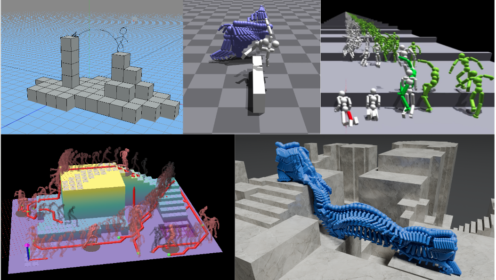

My first paper has been officially accepted!
This paper was motivated by a vague goal in my mind: in a complex environment that is either procedurally generated or manually designed, can we control a physics-based character to go from point A to point B?
While focusing on this project, I did not give myself enough time to do a full literature review of previous terrain traversal character animation papers.
The goal of this blog post is to take a look at some papers from the pre-deep-learning era of character animation research, in order to gain some insights that will be valuable for the future of terrain-traversal character animation.
2002 Motion Graphs
Motions first need per frame point samples on the body meshes.
These are used to compute distance metrics between different frames of motion.
2006 Motion Patches: Building Blocks for Virtual Environments Annotated with Motion Data
2011 Deformable Motion: Squeezing into Cluttered Environments
2013 Relationship Descriptors for Interactive Motion Adaptation
2016 Character contact re-positioning under large environment deformation.
Conclusion